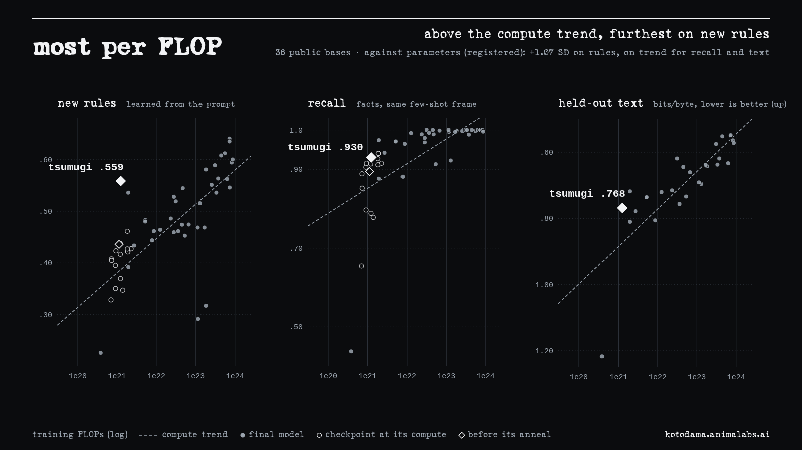

言霊 紬
A 1.4B base model, trained on 110B tokens, that learns new rules from its prompt above the size trend of public base models. It tracks who “you” is in a conversation like base models trained on 40 to 300 times more data. The weights, the training checkpoints, the code and the benchmark are open.

Each prompt shows worked examples of an invented word ending, invented operators or a nonsense pattern. The model then has to apply the rule to a new case. On this, tsumugi scores above the size trend of 37 public base models. On recall in the same format, and on held-out text, it sits on that trend.
The test was registered before any row was scored, and all three of its predictions hold. Among the public bases under 4B, only Qwen3 1.7B scores higher on new rules.
tsumugi runs one 20-layer block twice, with the same weights. Removing a quarter of the attention in the second pass cuts its rule-learning score by .13, while recall in the same prompts falls .025. The same cut costs .035 in the first pass and .019 outside the loop.
This test was registered too. The second-pass cut also does more general damage, and the result holds with that damage controlled for.
In a two-person chat where objects pass between the speakers, “you” has to follow the person being addressed. Shown three worked examples, tsumugi does, and it is the smallest public base model measured that passes this test. The next smallest is Qwen3-4B, trained on 36T tokens, about 300 times tsumugi's 110B.
The simpler case, a fixed “you”, it learns by 33B training tokens. OLMo-2 1B needs 420–525B.
Its average over nine standard zero-shot benchmarks is 64.1, half a point below Pythia-2.8B's 64.7, at a quarter of the training compute.
Given an empty document, 128 times, tsumugi writes no chatbot transcripts, assistant replies or machine-made training data. Many modern base models do. Every run is on An Empty Document.
tsumugi is a Llama-style decoder with Block Attention Residuals. Each layer reads a learned mixture of earlier blocks' outputs, and the block boundaries are fitted to the network's own layer geometry. Its 52 unique layers run as 72: a 19-layer prelude, a 20-layer core executed twice with shared weights, and a 13-layer coda. Hidden matrices are trained with Muon. It was trained on 110B tokens with the SmolLM2 tokenizer and annealed at the end.
The training data, the full architecture and how to run it are on the model card. A technical report will follow.
anneal… branches: the
release seed to 110B (seed 17) and a
replicate to 11B (seed 7).